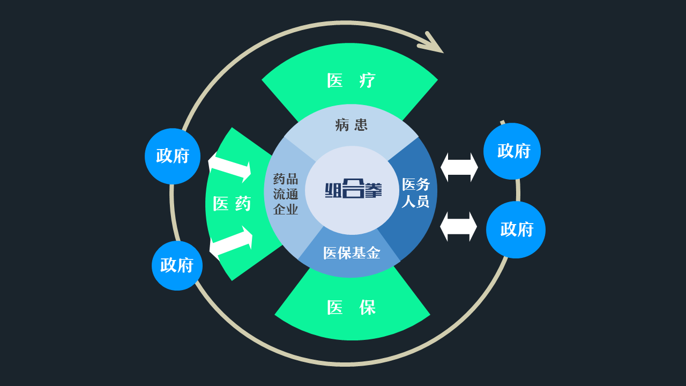
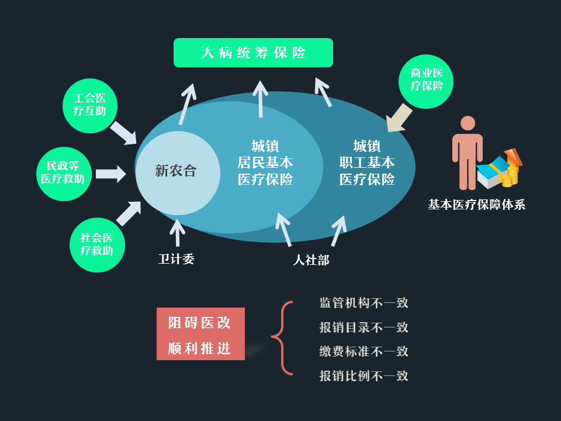

分级诊疗
健全分级诊疗体系，加强全科医生培养，推进医师多点执业，让群众能够就近享受医疗服务（李克强）
到2017年，分级诊疗政策体系逐步完善，85%以上的地市开展试点。
到2020年，分级诊疗模式逐步形成，基本建立符合国情的分级诊疗制度，形成“小病在基层、大病到医院、康复回基层”的合理就医格局。
2017年3月5日，第十二届全国人民代表大会第五次会议在北京人民大会堂开幕。国务院总理李克强作政府工作报告。
“ 注重保障和改善民生，人民群众获得感增强。”
过去的一年，政府把 “财政收入增长虽放缓，但该给群众办的实事一件也不能少”作为目标，加大民生投入，继续深化医疗卫生事业领域的改革。
“医疗改革”连续两年成为两会中最受民众观众的五大问题之一。
“深化医疗、医保、医药联动改革。全面推开公立医院综合改革，全部取消药品加成，协调推进医疗价格、人事薪酬、药品流通、医保支付方式等改革。”
2017年医疗改革力度将继续加大，这一场自2009年开始的“深化医药卫生体制改革”（俗称“新医改”）之战正步入下一个战场。
“ 三医 ”联动，即医疗保障体制改革、医疗卫生体系改革与药品流通体制改革联动，于2016年两会首次写入《政府工作报告》，被认为是深化医药卫生体制改革的关键，其意义在于整体看待医疗、医保、医药，以切实解决老百姓看病难、看病贵的问题。
目前，国内探索了多种“三医”联动的医改模式，如福建三明的综合改革模式、安徽的新农合大病保险模式以及上海的家庭医生签约模式，这些模式都具有较突出的代表性。
两会期间，国家卫计委李斌主任在答记者问时说道：“基本医保制度是实现社会公平正义，实现社会和谐稳定的一个“压舱石”，党中央、国务院高度重视这项制度的建设，我们这几年来经过努力，已经织起了一张全世界最大的医疗保障网，覆盖了13亿多人口，这样就为人人病有所医提供了有效保障。”
注：参加城镇医疗保险人数=
参加城镇居民基本医疗保险的人数 + 参加城镇职工基本医疗保险
新农合纳入城镇居民基本医疗保险计算
李克强总理在《政府工作报告》里明确提出，城乡居民的基本医保政府补助标准从420元提高到450元，进一步增加资金的投入，同步提高个人缴费标准，扩大用药保障范围。
数据来源：历年政府工作报告、国家人力资源社会保障部
注：个人缴费标准 + 基本医保政府补助标准= 医保基金筹资标准（人均）
数据来源：重庆市綦江区人力资源和社会保障局网
2016年，中央财政对120元基数部分按原有比例补助，对增加的300元按照西部地区80%、
中部地区60%的比例补助，对东部地区各省份分别按一定比例补助。
政府提高居民医保财政补助和个人缴费标准，或与医保基金面临风险有关。今年2月，财政部等三部委在《关于加强基本医疗保险基金预算管理发挥医疗保险基金控费作用的意见》中称，当前医保基金存在“中长期不可持续的风险”，“不合理增长的医疗费用部分抵消了政府投入的效果”。
2012年开始，全国基本医保基金收入增幅低于支出增幅，这一态势持续了三年之久；2015年，全国医保基金收入增幅低于支出增幅的趋势得到扭转。但据人社部统计，仍有北京、天津、湖北、重庆、贵州和新疆建设兵团六个地区统筹基金累计结余不足六个月支出。
《中国医疗卫生事业发展报告2014》发布的预测显示，2017年城镇职工基本医疗保险基金就将出现当期收不抵支的现象，到2024年就将出现基金累计结余亏空7353亿元的严重赤字。
因此财政部要求每年6月底前，各医保统筹地区必须完成上年度医保基金精算报告，确保提高基本医保水平，不超过基金的承受能力。
审查
2016年8月到9月，政府组织了一次约占总金额4.67%医疗保险审计抽查，涉及总资金为156亿元。结果发现，305万人重复参加基本医疗保险，造成财政多补助14.57亿元，其中有5124人重复报销医疗费用1346.91万元；109个企业医疗保险基金仍在封闭运行，涉及职工776.76万人，其中23个企业存在欠缴医疗保险费、拖欠定点机构结算款和职工医疗费等问题； 1.4亿元医保个人账户资金被提取现金或用于购买日用品等支出，涉及539家药店。安徽省甚至存在挤占挪用、骗取套取、违规收费等违法违规问题，涉及资金达到15.78亿元。
问题
此前，我国的基本医疗保障体系主要分为三块，城镇职工基本医疗保险制度、城镇居民基本医疗保险制度和新型农村合作医疗制度（后简称“新农合”），辅以商业健康险，社会医疗救助、民政医疗救助、工会医疗互助等。
医保制度最大的问题是不统一，包括监管机构不一致(新农合归口卫计委，城镇职工和居民归口人社部)、报销目录不一致、缴费标准不一致、报销比例不一致，严重阻碍医改的推进。
“ 六统一 ”
2016年1月，国务院发布《关于整合城乡居民基本医保制度的意见》（后简称《意见》），将城镇居民基本医保和新农合合而为一，并为城乡居民基本医保制度，目的是提升服务效能，让城乡居民将获得更多实惠。
《意见》提出 “六统一”，一统一覆盖范围，二统一筹资政策，三统一保障待遇，四统一医保目录，五统一定点管理，六统一基金管理。城乡医保合并，两种制度并轨，虽然医保基金盘子扩大，实现了大数法则，但是管理责任更重，承担的压力更大。
3月28日，2017年全国医改工作电视电话会议在京召开，国务院副总理刘延东提出要全面完成城乡居民医保的“六统一”工作，建立高效的全民医疗保障制度。
2013年-2016年全国二级以上公立医院病人费用情况
数据来源：国家卫生计生委统计信息中心
注：按可比价格计算的卫生费用=当年的价格计算的卫生总费用 /
当年的GDP价格指数
改革前，公立医院是通过服务收费、药品加成收入和政府补贴这三个补助渠道。改革后，药品加成取消，变成了服务收费和政府补助两个渠道。全面推进公立医院的综合改革，核心是破除“以药补医”的机制，建立起维护公益性、调动积极性、保障可持续的运行新机制。
药品加成
“药品加成”政策是我国50年代困难时期实行的一个政策，当时是具有积极意义的。但是，随着我们国家经济社会的快速发展，“以药补医”逐步演化成为一种逐利机制，大处方、大输液、滥用抗菌素等问题日益严重，推高了医疗费用，削弱了公立医疗机构的公益性，损害了群众的利益，人民群众反映强烈，迫切需要通过改革来解决。
困境
监管权力分散。公立医院多头领导，不仅包括卫计委、人社部、发改委、财政部、 食品药品监管局，还包括一些大学。缺乏有效的监管， 使公立医院、院长在旧的利益分配机制下很难主动去推进改革。
医院逐利性。医院逐利性源于计划经济转市场经济的九十年代，在缺乏财政支持的情况下，医院开始自负盈亏，产生了药品加成制度，而经过 20 多年的沉淀，医院和医生成为以药养医下利益分配的一环，很难有动力去推进改革，甚至会反对改革。造成改革过程汇总，各方互相推诿，相关政策很难落实。
试点
2009年新一轮医改以来，我们一直把取消“药品加成”作为破除“以药补医”机制的切入点和突破口。2011年在所有政府办的基层公立医疗机构取消了药品加成。2015年在县级公立医院全部取消了药品加成。2016年200个公立医院综合改革试点城市全部取消了药品加成。应该说，我们逐步取消药品加成，每年降低药品费用，公立医院的药占比由2009年的46%下降到40%，一定程度上减轻了群众的医疗负担。据今年不完全统计，预计将再次为群众节省药品费用600-700亿元。(王贺胜 答记者问)
2017年3月22日，北京市人民政府印发《医药分开综合改革实施方案》，4月8日起，所有在京公立医疗机构都将实施“医药分开”综合改革。
医药分开指把医院的利益和药品销售彻底分开，参加改革的医疗机构全部取消药品加成，所有药品零差价销售。经测算，医改后药品将取消的15%的药品加成。具体内容为“三取消一增设”。三取消：取消药品加成（不含中药饮片）费、取消挂号费、取消诊疗费；一增设：设立医事服务费。
单位：元
数据来源：北京市人民政府
此次医改总量控制、结构调整，按照“患者负担总体不增加”的原则，医护人员劳务项目价格上涨，大型检查及药品费用下降，患者总体费用水平基本保持平衡。就个体而言，吃药便宜了，打针贵起来。
单位：元
数据来源：北京市人民政府
同时，首次增加了“项目内涵”，对每项医疗服务的操作过程和技术服务进行清晰、详细的描述，方便患者了解自己所接受的医疗服务应包含的流程和内容，减少信息不对称。
另外，北京的改革中还提到除国家明确规定不予报销的项目，其他全部纳入医保报销范围，包括新增的55项专项护理和新生儿诊疗，调整后的96项中医类项目等。
除了备受瞩目的医疗、医院问题外，李克强总理还在今年两会上提出了更多的工作任务。
“推进健康中国建设。”
“在全国推进医保信息联网，实现异地就医住院费用直接结算。”
“及时公开透明有效应对公共卫生事件。”
“做好健康促进，继续提高基本公共卫生服务经费补助标准，加强疾病预防体系和慢性病防控体系建设。”
“保护和调动医务人员积极性。构建和谐医患关系。”
……
到2017年，分级诊疗政策体系逐步完善，85%以上的地市开展试点。
到2020年，分级诊疗模式逐步形成，基本建立符合国情的分级诊疗制度，形成“小病在基层、大病到医院、康复回基层”的合理就医格局。
实现资源共享，减少浪费
优化资源，各个机构各司其职，发挥长处，提高效率
惠及老百姓，使医疗资源下沉，医疗改革能够增加公平性。
预计2017年底，基本实现国家和省级人口健康信息平台以及全国药品招标采购业务应用平台互联互通，基本形成跨部门健康医疗数据资源共享共用格局
到2017年，家庭医生签约服务覆盖率达到30%以上，重点人群签约服务覆盖率达到60%以上。
到2020年，力争将签约服务扩大到全人群,基本实现家庭医生签约服务制度的全覆盖。
2016年底已经实现省内异地直接进行结算。
今年上半年实现异地退休安置人员跨省异地就医住院费用直接结算。
今年年底之前，实现所有符合转诊条件的人员异地就医住院费用直接结算。
上海、江苏、浙江、安徽、福建、湖南、重庆、四川、陕西、青海、宁夏等11个综合医改试点省份各选择3个市（州、区），除西藏外的其他省份各选择1个公立医院综合改革试点城市进行试点。
《关于开展公立医院薪酬制度改革试点工作的指导意见》
今年是医疗改革的攻坚之年，也是各项医改工作的落实之年。
李克强总理在《政府工作报告》中提到：“民生是为政之要，必须时刻放在心头、扛在肩上。在当前国内外形势严峻复杂的情况下，更要优先保障和改善民生，该办能办的实事要竭力办好，基本民生的底线要坚决兜牢。”
今年的改革能否取得让群众满意的成绩，让我们拭目以待！